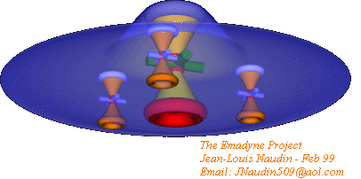
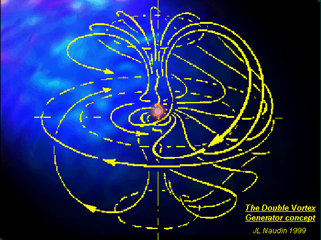
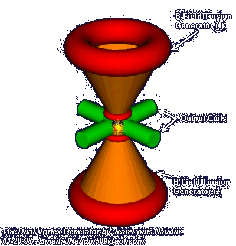
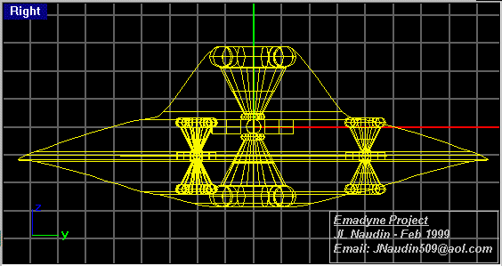
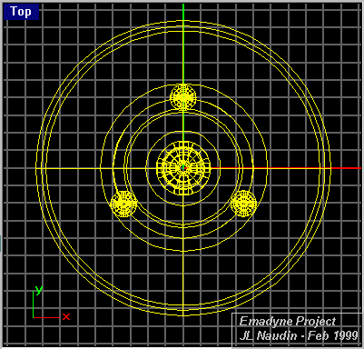
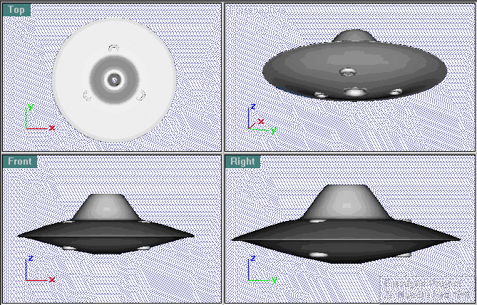
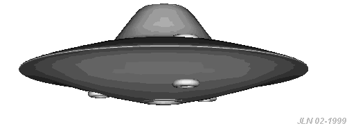
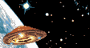

The Dual-Vortex Engines SpaceCraft
created on 01-20-99 - JLN Labs - last update on 02-01-99


Two special conical coils ( 1 and 2 )are used for generating the B-Field Torsion effect. The special B-Fields generated by the conical shaped coil must be balanced in the case of the use only as a generator. In the case of the B-Field are unbalanced the generator can produce an asymetrical thrust due to the unbalanced Aether pressure above and below. In this case the device act as a Aether thruster which is also able to produce usable energy. So, this will permit to start a new device the Emadyne project (Electro-MAgnetic and DYNamic), which uses a big Dual Vortex Generator (DVGen) as a thruster in the center and three small units for the B-Field control.





If you have any suggestions or comments, send me your Feedback
 Email : JNaudin509@aol.com
Email : JNaudin509@aol.com
Return to the B-Field Torsion page